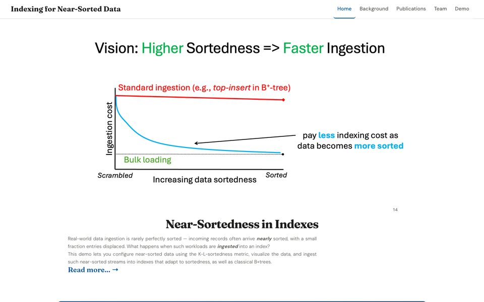
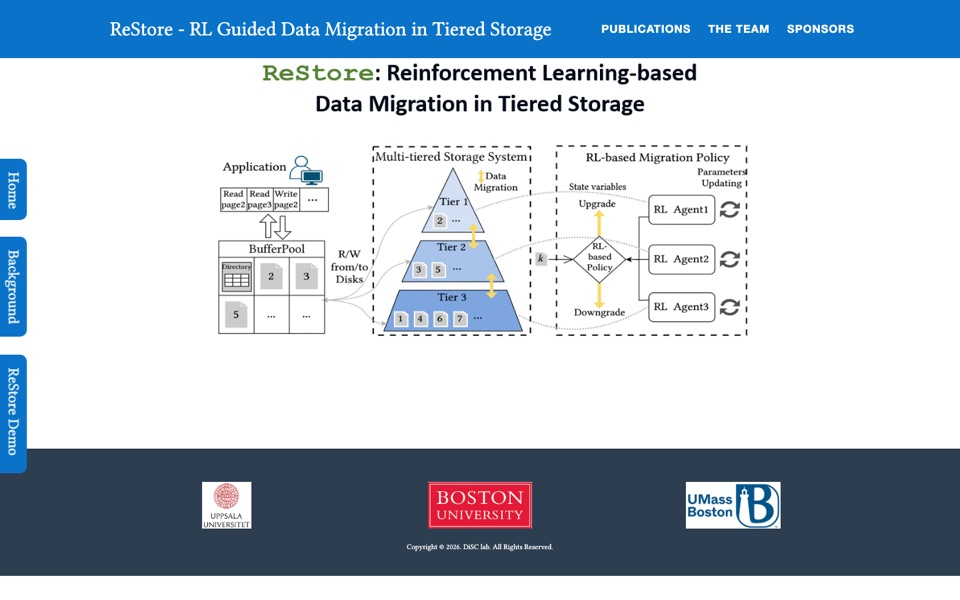
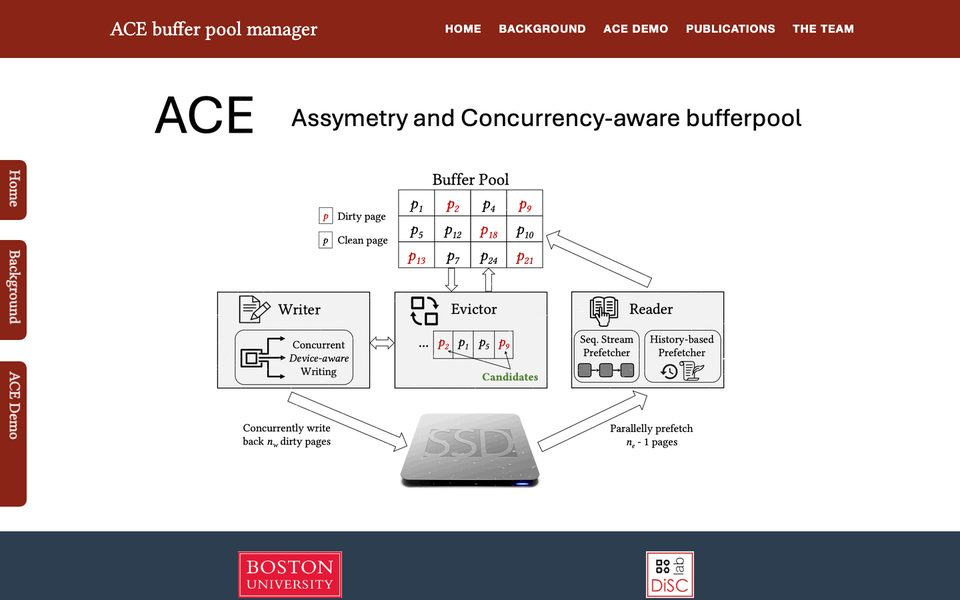
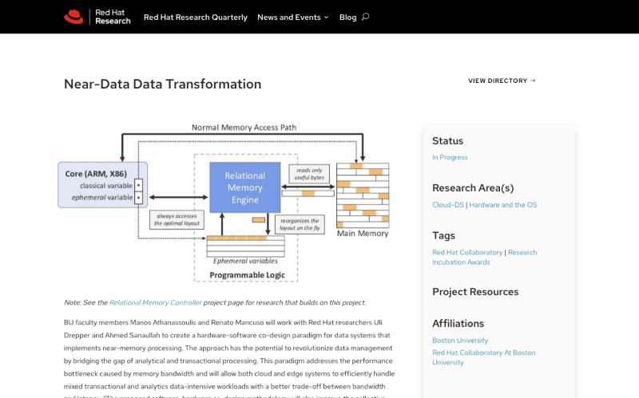
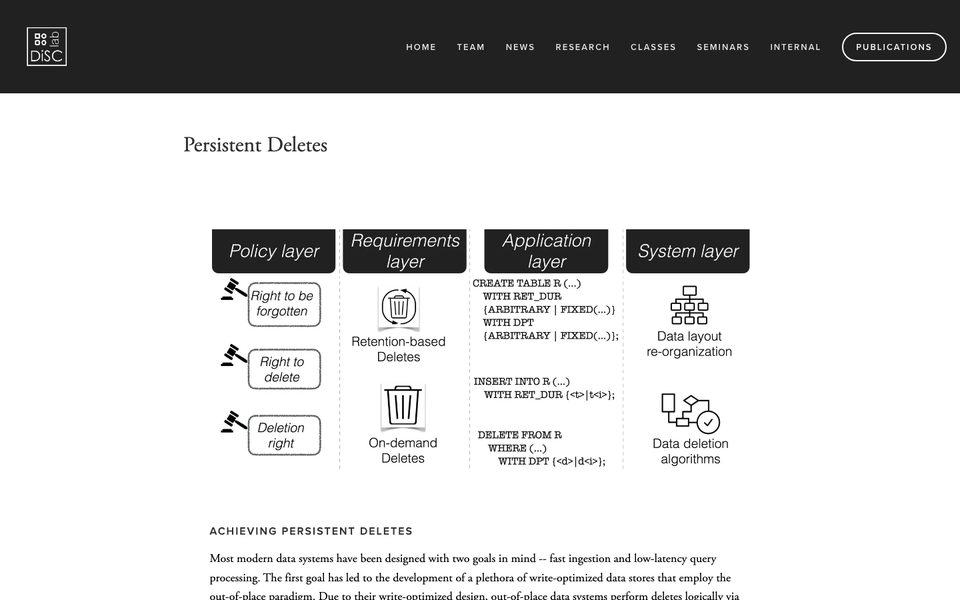
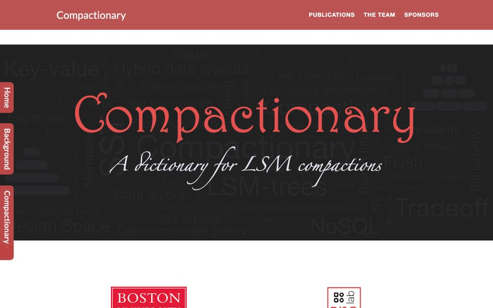
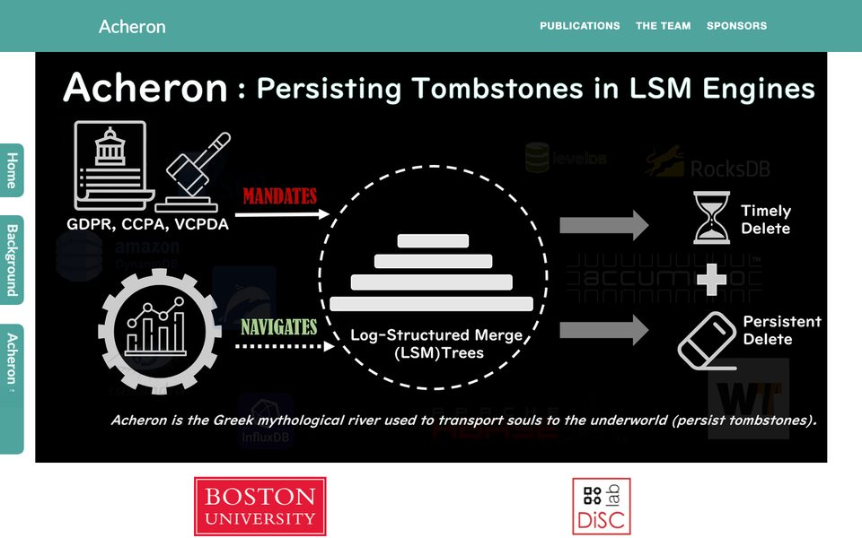
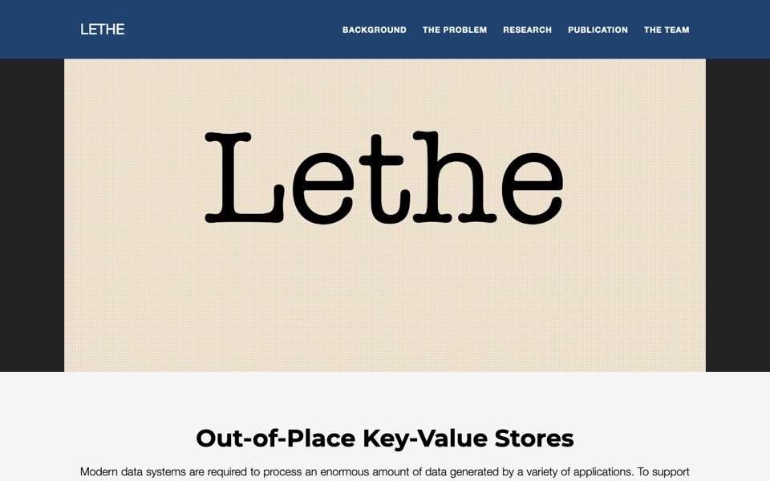
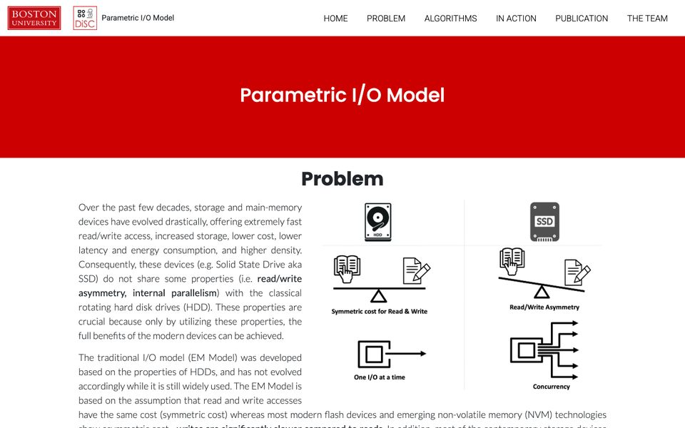

Demos and Project Pages
Interactive demonstrations and project pages from the Data-intensive Systems and Computing Lab at Boston University. Click a card to explore it.

Indexing for Near-Sorted Data
DemoConfigure near-sorted workloads with the K-L sortedness metric and ingest them into sortedness-aware indexes and classic B+-trees.

ReStore: RL-based Multi-Tier Storage Management
DemoReinforcement-learning agents decide how to migrate data across storage tiers as the workload shifts.

ACE: A Bufferpool for SSDs
DemoAn asymmetry- and concurrency-aware buffer pool manager that exploits the read/write asymmetry and parallelism of modern SSDs.

Near-Data Data Transformation
Project PageA hardware-software co-design that reorganizes data on the fly near memory, serving both transactional and analytical workloads.

Achieving Persistent Deletes
Project PageFrom privacy regulations to system design: making deletes timely and persistent across the policy, application, and storage layers.

LSM Compactionary
DemoVisualize and compare compaction strategies in LSM-trees and see how each choice affects writes, lookups, and space.

Acheron: Persisting Deletes
DemoSee how LSM engines can guarantee that deleted data is physically purged within a user-defined time bound.

Lethe: Timely and Persistent Deletes
Project PageDelete-aware compaction and data layouts that make deletes efficient and timely in out-of-place key-value stores.

Parametric I/O Model
DemoAn I/O model that captures read/write asymmetry and device concurrency, with algorithms designed around it.